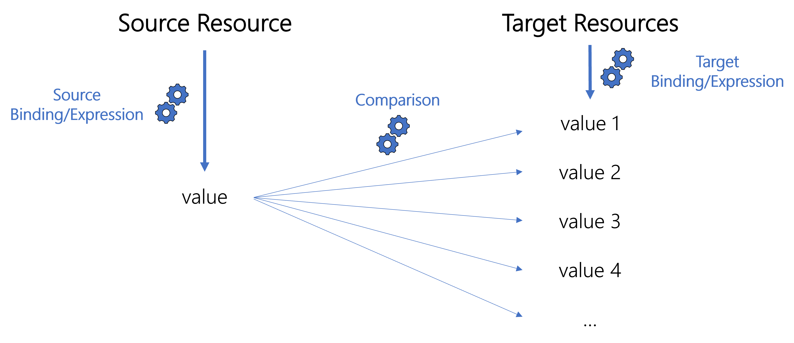

Build Unique Value Aspect
Computes a unique value for a given property.
Examples
The following example generates bots' logins during their creation.
<BuildUniqueValueAspect Identifier="Directory_Bot_UniqueValue_Login" Binding="Workflow_Directory_Bot:Directory_Bot.Login" ExpressionBinding="Workflow_Directory_Bot:Directory_Bot" Expression="C#:wkf:return 'B' + string.Format("{0:D5}", new Random().Next(99000, 99999));" SqlCheckExpression="SELECT TOP 1 login FROM zz_directory_bot WHERE login=@VALUE" Priority="10" IterationsCount="10" SimulationExpression="C#:wkf:return "99999";">
<PointCut Activity="Directory_Bot_Create:Request" ActivityState="Action-Executed" Mode="After" /></BuildUniqueValueAspect>
Properties
| Property | Details |
|---|---|
| Binding required |
Type
|
| Identifier required |
Type
|
| Expression optional |
Type
|
| ExpressionBinding optional |
Type
|
| HistorizeBinding optional |
Type
|
| HistorizeSeparator default value: � |
Type
|
| IfExpression optional |
Type
|
| IterationsCount default value: 0 |
Type
|
| Message_L1 default value: |
Type
|
| OnlyIfNew default value: false |
Type
|
| Priority default value: 0 |
Type
|
| SimulationExpression optional |
Type
|
| SqlBuildExpression optional |
Type
|
| SqlCheckExpression optional |
Type
|
Child Element: PointCut
A pointcut is a mechanism telling Identity Manager when to execute the linked Aspects.
The position of the pointcut is specified by an activity state and a mode (before or after).
| Property | Details |
|---|---|
| Activity required |
Type
|
| ActivityState required |
Type
|
| Mode default value: 0 |
Type
|
Child Element: UnicityCheckRule
A unicity check rule ensures that the expression computed by a BuildUniqueValueaspect for a given property is unique, i.e. not yet used by another resource, in a given entity type.
The comparison performed by these rules to check unicity can be configured in SQL instead of C# via the SqlCheckExpression property of the aspect.
The value of the source binding/expression is computed based on the properties of the source resource which is the resource whose property we compute via the BuildUniqueValue aspect.
The rule compares the return value of the source binding/expression with the existing values of the target binding/expression in the target entity type.

For example, we need to generate an email address for any new user joining the company. We configure in a
BuildUniqueValueaspect that users' emails are computed with{firstName}.{lastName}@{EmailDomain}.Consider a new user called John Doe. We need to link to the aspect a unicity check rule that is going to compare the email core
john.doewith the email cores of existing resources in a given entity type. Thus Identity Manager can ensure that the email core is unique, and finally build the unique email address.
Both source and target bindings/expressions must be consistent with the binding/expression used in the corresponding aspect which must not use a SqlCheckExpression.
One BuildUniqueValue aspect can be linked to many unicity check rules, but should not be linked to more than one rule per target entity type.
The unicity check rules linked to a same aspect are combined with the AND operator. It means that the aspect's iteration goes up when at least one of the rules detects non-unicity.
When creating or updating a unicity check rule, launch the
Compute Correlation Keys Task
before applying the role model and launching workflows.
For information: Identity Manager needs to store the correlation keys linked to the expressions defined in the unicity check rule, such as the return value, the entity type, etc. That's why the task mentioned above must be launched before launching any workflow using a unicity check rule.
Examples
Basic example
The following example checks the unicity of the login of a new user.
In order to be able to write the source and target bindings/expressions of the unicity check rule, you must understand the binding/expression of the corresponding
BuildUniqueValueaspect:<BuildUniqueValueAspect Identifier="Directory_UserRecord_UniqueValue_Login" Binding="Workflow_Directory_User:Directory_User.Records.Login" ExpressionBinding="Workflow_Directory_User:Directory_User.Records" Expression="C#:record:return (record.UserType?.LoginPrefix ?? "U") + record.UserIdentifier;" IterationsCount="10" Priority="70" > <PointCut ... /></ BuildUniqueValueAspect >
We want to check the unicity of the new user's login, compared with the logins of existing users:
<UnicityCheck Aspect="Directory_UserRecord_UniqueValue_Login" TargetEntityType="Directory_UserRecord" TargetBinding="Login" />
Here the source binding and expression are those from the aspect.
Multiple unicity checks
With the same aspect as the previous example, we might want to compare the login of the new user with the list of reserved logins too:
<UnicityCheck Aspect="Directory_UserRecord_UniqueValue_Login" TargetEntityType="Directory_UserRecord" TargetBinding="Login" /><UnicityCheck Aspect="Directory_UserRecord_UniqueValue_Login" TargetEntityType="Directory_ReservedLogin" TargetBinding="Value" />
Sophisticated example
The following example checks the unicity of the email address of a new user.
In order to be able to write the source and target bindings/expressions of the unicity check rule, you must understand the binding/expression of the corresponding
BuildUniqueValueaspect:<BuildUniqueValueAspect Identifier="Directory_UserRecord_UniqueValue_Email" Binding="Workflow_Directory_User:Directory_User.Records.Email" ExpressionBinding="Workflow_Directory_User:Directory_User.Records" Priority="80" // We want an email address such as {firstName}.{lastName}@{EmailDomain}. Expression="C#:record:var firstName = record.FirstName.Simplify()?.ToLowerInvariant(); var lastName = record.LastName.Simplify()?.ToLowerInvariant(); if (string.IsNullOrEmpty(firstName) || string.IsNullOrEmpty(lastName)) { // Missing data return null; } var result = firstName + "." + lastName; // If the email core, i.e. {firstName}.{lastName}, is already used, then we try with {firstName}.{lastName}2, etc. if (iteration > 0) { result += iteration.ToString(); } result = result + '@' + record.Subsidiary?.EmailDomain; return result;" IterationsCount="10" />
We want to include in the unicity check only the email's core firstName.lastName without the @EmailDomain part. This is why the source expression starts like the aspect's expression but does not add the domain part, and the target expression removes the domain part from existing values:
<UnicityCheck Aspect="Directory_UserRecord_UniqueValue_Email"
SourceBinding="Workflow_Directory_User:Directory_User.Records"
// The source expression is similar to the one from the aspect, but we check the unicity of the email core only, not the whole email address.
SourceExpression="C#:record:var firstName = record.FirstName.Simplify()?.ToLowerInvariant();
var lastName = record.LastName.Simplify()?.ToLowerInvariant();
if (string.IsNullOrEmpty(firstName) || string.IsNullOrEmpty(lastName))
{
// Missing data
return null;
}
var result = firstName + "." + lastName;
if (iteration > 0)
{
result += iteration.ToString();
}
return result;"
TargetEntityType="Directory_UserRecord"
TargetExpression="C#:record:
if(string.IsNullOrEmpty(record.Email))
{
return null;
}
var result = record.Email;
// Delete the domain to keep only the email core
var index = result.IndexOf('@');
if(index >= 0)
{
result = result.Substring(0, index);
}
return result;" />
| Property | Details |
|---|---|
| SourceBinding optional |
Type
|
| SourceExpression optional |
Type
|
| TargetBinding optional |
Type
|
| TargetEntityType required |
Type
|
| TargetExpression optional |
Type
|